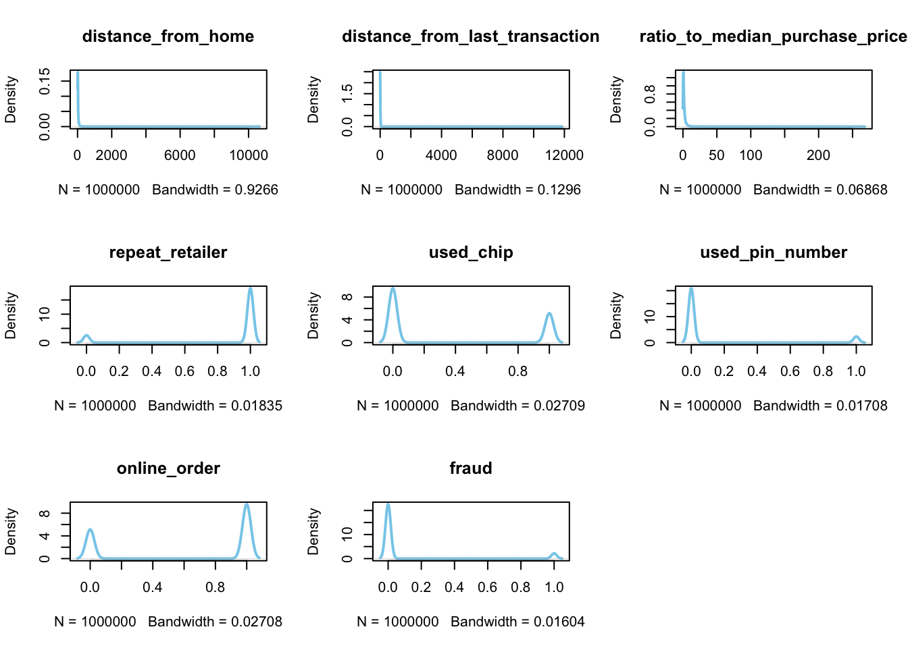
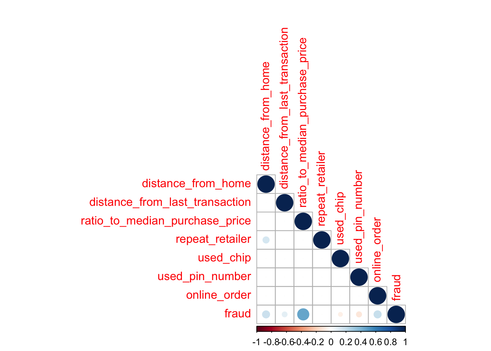
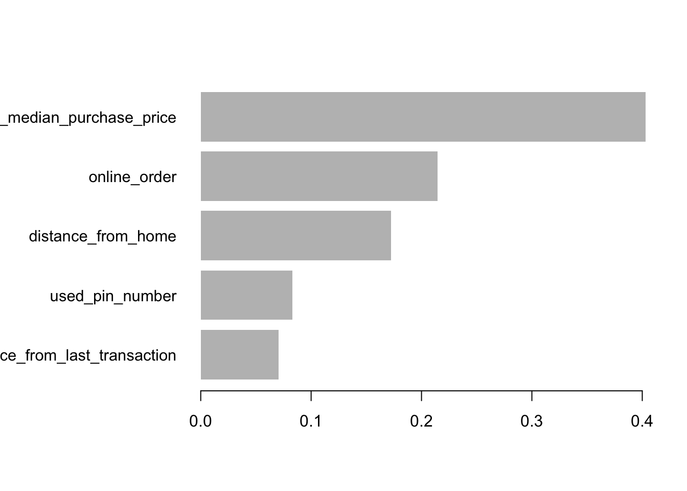

library(tidymodels)
library(xgboost)
library(tidyverse)
library(pROC)
library(ggplot2)
library(corrplot)
data <- read_csv("data/card_transdata.csv") Using XGBoost for Fraud Detection
Abstract
XGBoost, an acronym for eXtreme Gradient Boosting, was crafted by Dr. Tianqi Chen in 2016 as a gradient-boosting algorithm. Demonstrating remarkable success, it has emerged as a formidable player in various data science competitions. Renowned for its exceptional performance, XGBoost stands out as a robust solution for tasks such as handling structured data, text classification, regression, and notably, exhibiting superior capabilities on large-scale datasets. Our vignette presents a comprehensive exploration of XGBoost, including its mathematical principles, programming language support, and practical application in classification problems.
Dataset Introduction
Our vignette is conducted on a simulated “Credit Card Fraud” dataset obtained on Kaggle (https://www.kaggle.com/datasets/dhanushnarayananr/credit-card-fraud/data). This dataset presents a binary classification problem, classifying transactions as either fraudulent or legitimate. With 8 variables and a total of 1,000,000 observations, only 8.74% (87,403) are marked as fraudulent, highlighting a significant class imbalance.
# A tibble: 6 × 8
distance_from_home distance_from_last_transaction ratio_to_median_purchase_p…¹
<dbl> <dbl> <dbl>
1 57.9 0.311 1.95
2 10.8 0.176 1.29
3 5.09 0.805 0.428
4 2.25 5.60 0.363
5 44.2 0.566 2.22
6 5.59 13.3 0.0648
# ℹ abbreviated name: ¹ratio_to_median_purchase_price
# ℹ 5 more variables: repeat_retailer <dbl>, used_chip <dbl>,
# used_pin_number <dbl>, online_order <dbl>, fraud <dbl>The variable explanations are as follows:
dist_home: the distance from home where the transaction happened
dist_last_transact: the distance from last transaction happened
ratio_to_med_price: ratio of transaction price to median purchase price
repeat_retailer: Is the transaction happened from same retailer
used_chip: Is the transaction through credit card?
used_pin_number - Is the transaction happened by using PIN number?
online_order - Is the transaction an online order?
fraud - Is the transaction fraudulent.
Exploratory Data Analysis
This dataset contains no missing value, therefore there is no imputation needed.

We can observe from the density curve graph of each variable that except for the first three, the other 5 variables including our response variable ‘fraud’ are binary. But the first three variables are greatly skewed.

From the correlation plot, the numerical variable ‘ratio_to_median’ has a positive correlation with respect to ‘fraud’, and then are ‘distance_from_home’ and ‘online_order’. Other than that, ‘used_pin_number’ has negatively correlated with ‘fraud’.

This graph represents the distribution of ‘fraud’. Around 91% of the transactions are not fraud and 9% are fraud, which reflects a imbalance in the data. This imbalance suggests adapting performance metrics like AUC-ROC, f1 score as evaluation metrics instead of “accurary” to assess the ML model.
Data Preprocessing
In preparation for modeling, the dataset undergoes initial processing steps. Outliers are systematically trimmed, and selected variables are renamed for clarity and conciseness. Subsequently, the mutate function is employed to enact transformations, notably generating scaled representations for the columns ‘dist_home,’ ‘dist_last_transact,’ and ‘ratio_to_med_price.’
Introduction to Boosted Trees and XGBoost
Gradient Boosted Decision Tree (GBDT)
In GBDT, the prediction of observation i is the sum of the predicted values from each of the k trees in the ensemble.
\[\hat{y} = \sum_{i=1}^{k} f_k(x_i)\]Each tree in the boosting model fits the negative gradient of the loss function to the current model’s prediction, and the current model’s prediction is the sum of the first k-1 trees.
If we use mean squared error as the loss function in a regression task, each tree simply fits the residual.
For example, suppose a person is 30 years old, and a GBDT model is used to predict his age.
Given the dataset, suppose the first tree’s prediction is 20.
Then the second tree fits the residual, which is 30 - 20 = 10. Suppose the second tree outputs 7.
Then the third tree fits the residual 10 - 7 = 3. Suppose the third tree outputs 2.
By adding the prediction of the three trees, we get our final prediction.
XGBoost
XGBoost is an efficient and scalable implementation of the gradient-boosted decision tree.
Tree Boosting
The objective function for k-th tree is \[\sum_{i=1}^{n} l(y_i, \hat{y_i}^{(k)})+\sum_{i=1}^{K}\omega(f_i)\].
The first term in the objective function denotes the loss function. It can be MSE in regression or cross-entropy in classification problems. The second term \(\omega(f_i)\) is a regularized term to control the model’s complexity to avoid overfitting.
When additively training the model, XGBoost used a second-order Taylor expansion to approximate the objective function instead of using the negative gradient.
After derivation, the optimization goal at step k will be \[\sum_{i=1}^{n}[g_if_k(x_i) + \frac{1}{2}h_{i}f_k^2(x_i)] + \omega(f_k)\],
where \(g_i\) and \(h_i\) denote the first-order and second-order derivative of the loss function to the current model’s prediction. i.e. \(g_i = \partial_{\hat{y_i}^{k-1}}l(y_i, \hat{y_i}^{k-1})\) and \(h_i = \partial^2_{\hat{y_i}{k-1}}l(y_i, \hat{y_i}^{k-1})\)
We find that the objective function for each tree depends only on \(g_i\) and \(h_i\), derivatives of the loss function. Therefore, XGBoost can be widely used in many scenarios, including regression, classification, and ranking problems, as long as XGBoost is given a loss function that is second-order differentiable. You can even customize your loss function in XGBoost!
Approximate Split Finding
We first look at a basic greedy approach for finding best split point.

In the above Exact Greedy Algorithm, we need to traverse every possible value of every feature to find the best split point. The score measures the reduction of loss function before and after the split. However, the method is inefficient when dealing with large datasets.
Instead, XGBoost used an approximated approach to find split points efficiently.

In the approximate framework, we first select some candidate splitting points according to percentiles of the feature distribution based on some criteria. For instance, a sorted feature column contains 10 values [1,2,2,2,2,4,5,7,9,20]. A 0.6 quantile corresponds to 4.
Weighted Quantile Sketch
How do we find these candidate split points? We cannot assign equal weights to every observation of the feature, as larger values may have a more significant impact on the loss function. Therefore, we need to calculate a weight for each feature value to make candidates distribute evenly on the data.
For each observation, XGBoost used its second-order derivative \(h_i\) as weight. Formally, let multi-set \(D_k = {(x_{1k},h_1), (x_{2k}, h_2)…(x_{nk}, h_{n})}\) denote k-th feature value and its corresponding second-order gradient, the rank function is \[r_k(z) = \frac{1}{\sum_{(x,h) \in D_k}h}\sum_{(x,h) \in D_k, x < z}h\].
For example, given
| feature value | 1 | 4 | 6 | 10 | 12 | 20 | 30 | 44 | 59 |
|---|---|---|---|---|---|---|---|---|---|
| \[h_i\] | 0.1 | 0.1 | 0.1 | 0.1 | 0.1 | 0.1 | 0.4 | 0.2 | 0.6 |
30 corresponds to \(\frac{1}{3}\) percentile, and 59 corresponds to \(\frac{2}{3}\) percentile.
Other techniques in XGBoost to improve efficiency
Each column (feature) of the dataset is pre-sorted and stored in memory as a column block. Each block contains the sorted feature column and each observation’s corresponding label value. Recall that when finding the best split point in a decision tree, samples with the feature value less than the split value go to the left subtree, and samples with the feature value larger than the split point go to the right subtree. Instead of sorting in every split in every tree, this pre-sorting step is done only once. Then the efficiently sorted columns will be reused many times in building every single tree.
XGBoost supports parallel computing during the process of finding the best split point in building a single tree. Then the information gain calculation for each feature can be done in parallel. Moreover, You can tune the parameter nthread to control the number of cores used in training the XGBoost model.
XGBoost supports column subsampling similar to a random forest.
Fraud Detection with XGBoost in R
Data Preparation
#set seed for reproducibility
set.seed(197)
#split training/validation/testing
data.split <- data %>%
initial_split(prop = 0.6, strata = fraud)
test.split <- initial_split(testing(data.split), prop = 0.5, strata = fraud)
data.val <- training(test.split)
data.test <- testing(test.split)
#define predictor and response variables in training set
# NOTE: XGBoost only use matrix data
train.x <- data.matrix(training(data.split) %>% select(-fraud))
train.y <- training(data.split) %>% pull(fraud)
#define predictor and response variables in validation set
val.x <- data.matrix(data.val %>% select(-fraud))
val.y <- data.val %>% pull(fraud)
#define predictor and response variables in testing set
test.x <- data.matrix(data.test %>% select(-fraud))
test.y <- data.test %>% pull(fraud)Model Fitting
objective: What’s your goal? In this case, we use ‘binary:logistic’ to predict the probability of having a fraud based on the predictor variables
eta: How fast to learn? default value 0.3
data: Training data in DMatrix structure
max.depth: The size of each tree and a rule of thumb is to use 2 or 3 to prevent overfitting
watchlist: Track model performance on training and validation data during the training process to prevent overfitting
nrounds: number of boosting rounds
early_stopping_rounds: Stop the training process if the model’s accuracy on validation set hasn’t improved for the specified number of rounds
#define xgb.DMatirx: This is a specialized data structure that xgboost uses for efficiency
xgb.train <- xgb.DMatrix(data = train.x, label = train.y)
xgb.val <- xgb.DMatrix(data = val.x, label = val.y)
xgb.test <- xgb.DMatrix(data = test.x, label = test.y)Here we use a watchlist and a validation set to select the optimal number of boosting rounds(nrounds). When training, we track the performance of the model on the training and validation datasets. Watchlist is usually used with the early_stopping_rounds parameter to determine when the model starts to overfit and we should stop.
watchlist = list(train=xgb.train, validation=xgb.val)
params <- list(
objective = "binary:logistic", # loss function for binary classification problem
eta = 0.3 # learning rate
)
#fit XGBoost model and display training and testing data at each round
model <- xgb.train(params = params,
data = xgb.train, # Training data
max.depth = 3, # Size of each individual tree
watchlist=watchlist, # Track model performance on train and validation set
nrounds = 500, # Number of boosting iterations
early_stopping_rounds = 50) # Number of iterations we will wait for the next decrease[1] train-logloss:0.451127 validation-logloss:0.451234
Multiple eval metrics are present. Will use validation_logloss for early stopping.
Will train until validation_logloss hasn't improved in 50 rounds.
[2] train-logloss:0.315480 validation-logloss:0.315400
[3] train-logloss:0.230386 validation-logloss:0.230380
[4] train-logloss:0.172470 validation-logloss:0.172339
[5] train-logloss:0.132665 validation-logloss:0.132591
[6] train-logloss:0.103900 validation-logloss:0.103731
[7] train-logloss:0.083184 validation-logloss:0.083053
[8] train-logloss:0.068000 validation-logloss:0.067906
[9] train-logloss:0.056529 validation-logloss:0.056380
[10] train-logloss:0.047899 validation-logloss:0.047716
[11] train-logloss:0.041405 validation-logloss:0.041280
[12] train-logloss:0.035617 validation-logloss:0.035361
[13] train-logloss:0.031879 validation-logloss:0.031617
[14] train-logloss:0.029015 validation-logloss:0.028713
[15] train-logloss:0.025746 validation-logloss:0.025646
[16] train-logloss:0.022735 validation-logloss:0.022630
[17] train-logloss:0.020837 validation-logloss:0.020740
[18] train-logloss:0.018697 validation-logloss:0.018630
[19] train-logloss:0.017351 validation-logloss:0.017269
[20] train-logloss:0.015829 validation-logloss:0.015803
[21] train-logloss:0.014291 validation-logloss:0.014280
[22] train-logloss:0.013309 validation-logloss:0.013313
[23] train-logloss:0.012142 validation-logloss:0.012122
[24] train-logloss:0.011534 validation-logloss:0.011516
[25] train-logloss:0.010776 validation-logloss:0.010751
[26] train-logloss:0.009838 validation-logloss:0.009849
[27] train-logloss:0.009218 validation-logloss:0.009230
[28] train-logloss:0.008827 validation-logloss:0.008860
[29] train-logloss:0.008284 validation-logloss:0.008290
[30] train-logloss:0.007880 validation-logloss:0.007913
[31] train-logloss:0.007359 validation-logloss:0.007387
[32] train-logloss:0.006815 validation-logloss:0.006847
[33] train-logloss:0.006499 validation-logloss:0.006555
[34] train-logloss:0.006125 validation-logloss:0.006183
[35] train-logloss:0.005733 validation-logloss:0.005795
[36] train-logloss:0.005460 validation-logloss:0.005519
[37] train-logloss:0.005100 validation-logloss:0.005168
[38] train-logloss:0.004777 validation-logloss:0.004857
[39] train-logloss:0.004418 validation-logloss:0.004494
[40] train-logloss:0.004262 validation-logloss:0.004343
[41] train-logloss:0.004010 validation-logloss:0.004088
[42] train-logloss:0.003817 validation-logloss:0.003903
[43] train-logloss:0.003683 validation-logloss:0.003777
[44] train-logloss:0.003497 validation-logloss:0.003580
[45] train-logloss:0.003383 validation-logloss:0.003470
[46] train-logloss:0.003141 validation-logloss:0.003228
[47] train-logloss:0.003010 validation-logloss:0.003111
[48] train-logloss:0.002836 validation-logloss:0.002926
[49] train-logloss:0.002677 validation-logloss:0.002775
[50] train-logloss:0.002568 validation-logloss:0.002661
[51] train-logloss:0.002416 validation-logloss:0.002515
[52] train-logloss:0.002235 validation-logloss:0.002337
[53] train-logloss:0.002161 validation-logloss:0.002264
[54] train-logloss:0.002057 validation-logloss:0.002166
[55] train-logloss:0.001896 validation-logloss:0.002013
[56] train-logloss:0.001812 validation-logloss:0.001927
[57] train-logloss:0.001728 validation-logloss:0.001847
[58] train-logloss:0.001664 validation-logloss:0.001779
[59] train-logloss:0.001565 validation-logloss:0.001683
[60] train-logloss:0.001492 validation-logloss:0.001611
[61] train-logloss:0.001448 validation-logloss:0.001568
[62] train-logloss:0.001392 validation-logloss:0.001515
[63] train-logloss:0.001326 validation-logloss:0.001444
[64] train-logloss:0.001247 validation-logloss:0.001365
[65] train-logloss:0.001195 validation-logloss:0.001316
[66] train-logloss:0.001156 validation-logloss:0.001277
[67] train-logloss:0.001101 validation-logloss:0.001227
[68] train-logloss:0.001058 validation-logloss:0.001188
[69] train-logloss:0.001015 validation-logloss:0.001144
[70] train-logloss:0.000985 validation-logloss:0.001116
[71] train-logloss:0.000943 validation-logloss:0.001079
[72] train-logloss:0.000909 validation-logloss:0.001041
[73] train-logloss:0.000860 validation-logloss:0.000993
[74] train-logloss:0.000827 validation-logloss:0.000964
[75] train-logloss:0.000799 validation-logloss:0.000936
[76] train-logloss:0.000775 validation-logloss:0.000913
[77] train-logloss:0.000744 validation-logloss:0.000887
[78] train-logloss:0.000712 validation-logloss:0.000853
[79] train-logloss:0.000683 validation-logloss:0.000827
[80] train-logloss:0.000622 validation-logloss:0.000770
[81] train-logloss:0.000607 validation-logloss:0.000756
[82] train-logloss:0.000589 validation-logloss:0.000737
[83] train-logloss:0.000567 validation-logloss:0.000715
[84] train-logloss:0.000550 validation-logloss:0.000699
[85] train-logloss:0.000532 validation-logloss:0.000680
[86] train-logloss:0.000513 validation-logloss:0.000662
[87] train-logloss:0.000498 validation-logloss:0.000648
[88] train-logloss:0.000470 validation-logloss:0.000622
[89] train-logloss:0.000454 validation-logloss:0.000609
[90] train-logloss:0.000433 validation-logloss:0.000590
[91] train-logloss:0.000420 validation-logloss:0.000579
[92] train-logloss:0.000401 validation-logloss:0.000563
[93] train-logloss:0.000387 validation-logloss:0.000552
[94] train-logloss:0.000371 validation-logloss:0.000535
[95] train-logloss:0.000357 validation-logloss:0.000527
[96] train-logloss:0.000349 validation-logloss:0.000520
[97] train-logloss:0.000338 validation-logloss:0.000512
[98] train-logloss:0.000327 validation-logloss:0.000497
[99] train-logloss:0.000312 validation-logloss:0.000482
[100] train-logloss:0.000302 validation-logloss:0.000473
[101] train-logloss:0.000292 validation-logloss:0.000463
[102] train-logloss:0.000283 validation-logloss:0.000455
[103] train-logloss:0.000275 validation-logloss:0.000449
[104] train-logloss:0.000258 validation-logloss:0.000432
[105] train-logloss:0.000250 validation-logloss:0.000424
[106] train-logloss:0.000242 validation-logloss:0.000421
[107] train-logloss:0.000233 validation-logloss:0.000408
[108] train-logloss:0.000224 validation-logloss:0.000401
[109] train-logloss:0.000218 validation-logloss:0.000395
[110] train-logloss:0.000211 validation-logloss:0.000390
[111] train-logloss:0.000194 validation-logloss:0.000375
[112] train-logloss:0.000187 validation-logloss:0.000369
[113] train-logloss:0.000182 validation-logloss:0.000363
[114] train-logloss:0.000177 validation-logloss:0.000360
[115] train-logloss:0.000171 validation-logloss:0.000358
[116] train-logloss:0.000166 validation-logloss:0.000352
[117] train-logloss:0.000160 validation-logloss:0.000346
[118] train-logloss:0.000155 validation-logloss:0.000345
[119] train-logloss:0.000152 validation-logloss:0.000342
[120] train-logloss:0.000147 validation-logloss:0.000341
[121] train-logloss:0.000142 validation-logloss:0.000337
[122] train-logloss:0.000138 validation-logloss:0.000333
[123] train-logloss:0.000133 validation-logloss:0.000329
[124] train-logloss:0.000130 validation-logloss:0.000328
[125] train-logloss:0.000126 validation-logloss:0.000324
[126] train-logloss:0.000123 validation-logloss:0.000324
[127] train-logloss:0.000119 validation-logloss:0.000322
[128] train-logloss:0.000116 validation-logloss:0.000319
[129] train-logloss:0.000112 validation-logloss:0.000315
[130] train-logloss:0.000109 validation-logloss:0.000313
[131] train-logloss:0.000106 validation-logloss:0.000309
[132] train-logloss:0.000103 validation-logloss:0.000310
[133] train-logloss:0.000101 validation-logloss:0.000308
[134] train-logloss:0.000098 validation-logloss:0.000305
[135] train-logloss:0.000095 validation-logloss:0.000305
[136] train-logloss:0.000093 validation-logloss:0.000303
[137] train-logloss:0.000091 validation-logloss:0.000300
[138] train-logloss:0.000088 validation-logloss:0.000300
[139] train-logloss:0.000086 validation-logloss:0.000300
[140] train-logloss:0.000084 validation-logloss:0.000301
[141] train-logloss:0.000082 validation-logloss:0.000298
[142] train-logloss:0.000080 validation-logloss:0.000297
[143] train-logloss:0.000078 validation-logloss:0.000297
[144] train-logloss:0.000076 validation-logloss:0.000296
[145] train-logloss:0.000074 validation-logloss:0.000297
[146] train-logloss:0.000068 validation-logloss:0.000289
[147] train-logloss:0.000067 validation-logloss:0.000285
[148] train-logloss:0.000065 validation-logloss:0.000285
[149] train-logloss:0.000063 validation-logloss:0.000285
[150] train-logloss:0.000062 validation-logloss:0.000284
[151] train-logloss:0.000061 validation-logloss:0.000283
[152] train-logloss:0.000060 validation-logloss:0.000283
[153] train-logloss:0.000058 validation-logloss:0.000281
[154] train-logloss:0.000057 validation-logloss:0.000283
[155] train-logloss:0.000053 validation-logloss:0.000277
[156] train-logloss:0.000052 validation-logloss:0.000278
[157] train-logloss:0.000051 validation-logloss:0.000273
[158] train-logloss:0.000050 validation-logloss:0.000275
[159] train-logloss:0.000049 validation-logloss:0.000271
[160] train-logloss:0.000048 validation-logloss:0.000272
[161] train-logloss:0.000047 validation-logloss:0.000274
[162] train-logloss:0.000046 validation-logloss:0.000272
[163] train-logloss:0.000045 validation-logloss:0.000272
[164] train-logloss:0.000044 validation-logloss:0.000273
[165] train-logloss:0.000043 validation-logloss:0.000272
[166] train-logloss:0.000042 validation-logloss:0.000275
[167] train-logloss:0.000042 validation-logloss:0.000274
[168] train-logloss:0.000041 validation-logloss:0.000273
[169] train-logloss:0.000040 validation-logloss:0.000274
[170] train-logloss:0.000039 validation-logloss:0.000275
[171] train-logloss:0.000039 validation-logloss:0.000273
[172] train-logloss:0.000038 validation-logloss:0.000275
[173] train-logloss:0.000038 validation-logloss:0.000275
[174] train-logloss:0.000035 validation-logloss:0.000273
[175] train-logloss:0.000035 validation-logloss:0.000274
[176] train-logloss:0.000034 validation-logloss:0.000274
[177] train-logloss:0.000033 validation-logloss:0.000272
[178] train-logloss:0.000033 validation-logloss:0.000274
[179] train-logloss:0.000031 validation-logloss:0.000272
[180] train-logloss:0.000031 validation-logloss:0.000273
[181] train-logloss:0.000030 validation-logloss:0.000271
[182] train-logloss:0.000030 validation-logloss:0.000273
[183] train-logloss:0.000028 validation-logloss:0.000272
[184] train-logloss:0.000028 validation-logloss:0.000271
[185] train-logloss:0.000028 validation-logloss:0.000270
[186] train-logloss:0.000027 validation-logloss:0.000271
[187] train-logloss:0.000027 validation-logloss:0.000272
[188] train-logloss:0.000026 validation-logloss:0.000271
[189] train-logloss:0.000026 validation-logloss:0.000272
[190] train-logloss:0.000025 validation-logloss:0.000271
[191] train-logloss:0.000025 validation-logloss:0.000270
[192] train-logloss:0.000025 validation-logloss:0.000270
[193] train-logloss:0.000024 validation-logloss:0.000269
[194] train-logloss:0.000024 validation-logloss:0.000270
[195] train-logloss:0.000024 validation-logloss:0.000270
[196] train-logloss:0.000023 validation-logloss:0.000267
[197] train-logloss:0.000022 validation-logloss:0.000267
[198] train-logloss:0.000022 validation-logloss:0.000268
[199] train-logloss:0.000021 validation-logloss:0.000266
[200] train-logloss:0.000021 validation-logloss:0.000267
[201] train-logloss:0.000021 validation-logloss:0.000265
[202] train-logloss:0.000020 validation-logloss:0.000266
[203] train-logloss:0.000020 validation-logloss:0.000266
[204] train-logloss:0.000020 validation-logloss:0.000264
[205] train-logloss:0.000019 validation-logloss:0.000265
[206] train-logloss:0.000019 validation-logloss:0.000263
[207] train-logloss:0.000019 validation-logloss:0.000264
[208] train-logloss:0.000019 validation-logloss:0.000264
[209] train-logloss:0.000018 validation-logloss:0.000264
[210] train-logloss:0.000018 validation-logloss:0.000265
[211] train-logloss:0.000018 validation-logloss:0.000264
[212] train-logloss:0.000018 validation-logloss:0.000265
[213] train-logloss:0.000017 validation-logloss:0.000265
[214] train-logloss:0.000017 validation-logloss:0.000263
[215] train-logloss:0.000017 validation-logloss:0.000263
[216] train-logloss:0.000017 validation-logloss:0.000262
[217] train-logloss:0.000016 validation-logloss:0.000263
[218] train-logloss:0.000016 validation-logloss:0.000263
[219] train-logloss:0.000016 validation-logloss:0.000265
[220] train-logloss:0.000016 validation-logloss:0.000264
[221] train-logloss:0.000016 validation-logloss:0.000265
[222] train-logloss:0.000016 validation-logloss:0.000266
[223] train-logloss:0.000015 validation-logloss:0.000265
[224] train-logloss:0.000015 validation-logloss:0.000265
[225] train-logloss:0.000015 validation-logloss:0.000266
[226] train-logloss:0.000015 validation-logloss:0.000265
[227] train-logloss:0.000015 validation-logloss:0.000266
[228] train-logloss:0.000015 validation-logloss:0.000266
[229] train-logloss:0.000015 validation-logloss:0.000266
[230] train-logloss:0.000014 validation-logloss:0.000266
[231] train-logloss:0.000014 validation-logloss:0.000267
[232] train-logloss:0.000014 validation-logloss:0.000267
[233] train-logloss:0.000014 validation-logloss:0.000266
[234] train-logloss:0.000014 validation-logloss:0.000267
[235] train-logloss:0.000013 validation-logloss:0.000266
[236] train-logloss:0.000013 validation-logloss:0.000266
[237] train-logloss:0.000013 validation-logloss:0.000266
[238] train-logloss:0.000013 validation-logloss:0.000267
[239] train-logloss:0.000013 validation-logloss:0.000268
[240] train-logloss:0.000013 validation-logloss:0.000267
[241] train-logloss:0.000013 validation-logloss:0.000268
[242] train-logloss:0.000013 validation-logloss:0.000268
[243] train-logloss:0.000012 validation-logloss:0.000268
[244] train-logloss:0.000012 validation-logloss:0.000267
[245] train-logloss:0.000012 validation-logloss:0.000268
[246] train-logloss:0.000012 validation-logloss:0.000269
[247] train-logloss:0.000012 validation-logloss:0.000268
[248] train-logloss:0.000012 validation-logloss:0.000269
[249] train-logloss:0.000012 validation-logloss:0.000270
[250] train-logloss:0.000012 validation-logloss:0.000269
[251] train-logloss:0.000012 validation-logloss:0.000270
[252] train-logloss:0.000012 validation-logloss:0.000271
[253] train-logloss:0.000011 validation-logloss:0.000270
[254] train-logloss:0.000011 validation-logloss:0.000271
[255] train-logloss:0.000011 validation-logloss:0.000270
[256] train-logloss:0.000011 validation-logloss:0.000271
[257] train-logloss:0.000011 validation-logloss:0.000271
[258] train-logloss:0.000011 validation-logloss:0.000271
[259] train-logloss:0.000011 validation-logloss:0.000271
[260] train-logloss:0.000011 validation-logloss:0.000271
[261] train-logloss:0.000011 validation-logloss:0.000270
[262] train-logloss:0.000011 validation-logloss:0.000271
[263] train-logloss:0.000011 validation-logloss:0.000272
[264] train-logloss:0.000011 validation-logloss:0.000272
[265] train-logloss:0.000011 validation-logloss:0.000272
[266] train-logloss:0.000010 validation-logloss:0.000272
Stopping. Best iteration:
[216] train-logloss:0.000017 validation-logloss:0.000262Results and Analysis
Our model stops boosting at 261th round, which means the model accuracy decreases in the next 50 rounds. So we know that overfitting occurs after that. Hence, we changed parameter nrounds to 261 to train our final model.
Similar to the random forest, we can visualize the variable importance in XGBoost.
# Define final model
# The argument verbose = 0 tells R not to display the training and testing error for each round.
final <- xgboost(params = params, data = xgb.train, max.depth = 3, nrounds = 261, verbose = 0)
### Feature Importance
# WRITE-UP refer to: https://cran.r-project.org/web/packages/xgboost/vignettes/discoverYourData.html
importance <- xgb.importance(feature_names = colnames(train.x), model = final)
head(importance) Feature Gain Cover Frequency
1: ratio_to_median_purchase_price 0.40318241 0.30090156 0.1915029
2: online_order 0.21435050 0.07013494 0.1388713
3: distance_from_home 0.17240824 0.29171508 0.2809131
4: used_pin_number 0.08302086 0.04859126 0.1236525
5: distance_from_last_transaction 0.07067806 0.24579428 0.1553583
6: used_chip 0.05635992 0.04286288 0.1097020# plot
# 3 most important features
xgb.plot.importance(importance_matrix = importance, top_n = 5)
Prediction and Accuracy Measure
# Use model to make predictions on test data
pred.y <- predict(final, test.x)
# Label test data according to the predicted probability
pred.label <- ifelse(pred.y > 0.5, 1, 0)
# Confusion Matrix
confusion.matrix <- table(Predicted = pred.label, Actual = test.y)
print(confusion.matrix) Actual
Predicted 0 1
0 182832 4
1 0 17164# AUC-ROC
roc <- roc(test.y, pred.label)Setting levels: control = 0, case = 1Setting direction: controls < casesauc <- auc(roc)
print(auc)Area under the curve: 0.9999# Visualization
ggroc(roc) +
labs(title = "ROC Curve", x = "False Positive Rate", y = "True Positive Rate") +
annotate("text", x = 0.2, y = 0.8, label = paste("AUC =", round(auc, 5)))
The plot on the right shows a very high AUC score of 0.99988, indicating that the model is almost a perfect classifier. Such an unusual result is probably because the simulated dataset is designed for practice purposes, and the data is so unbalanced.